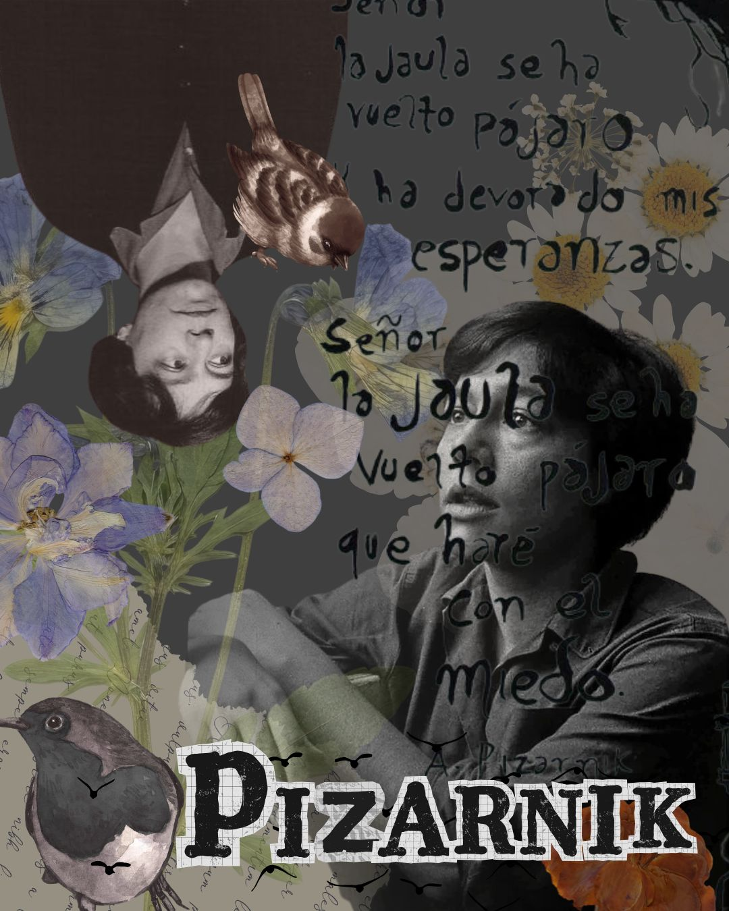
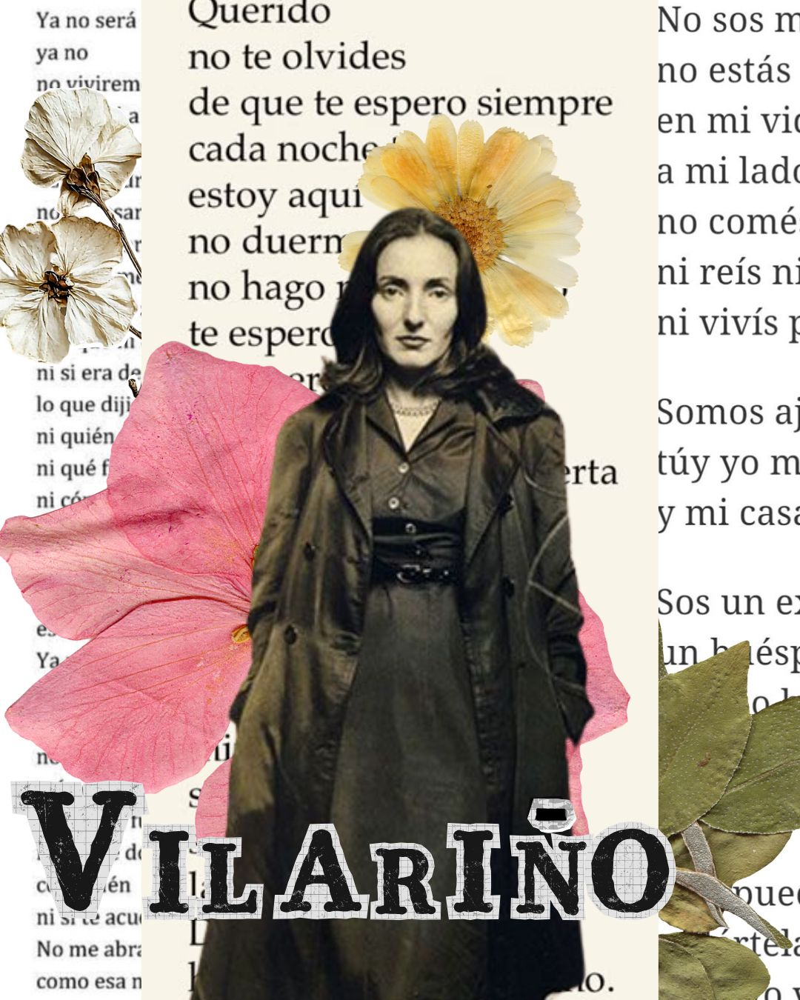
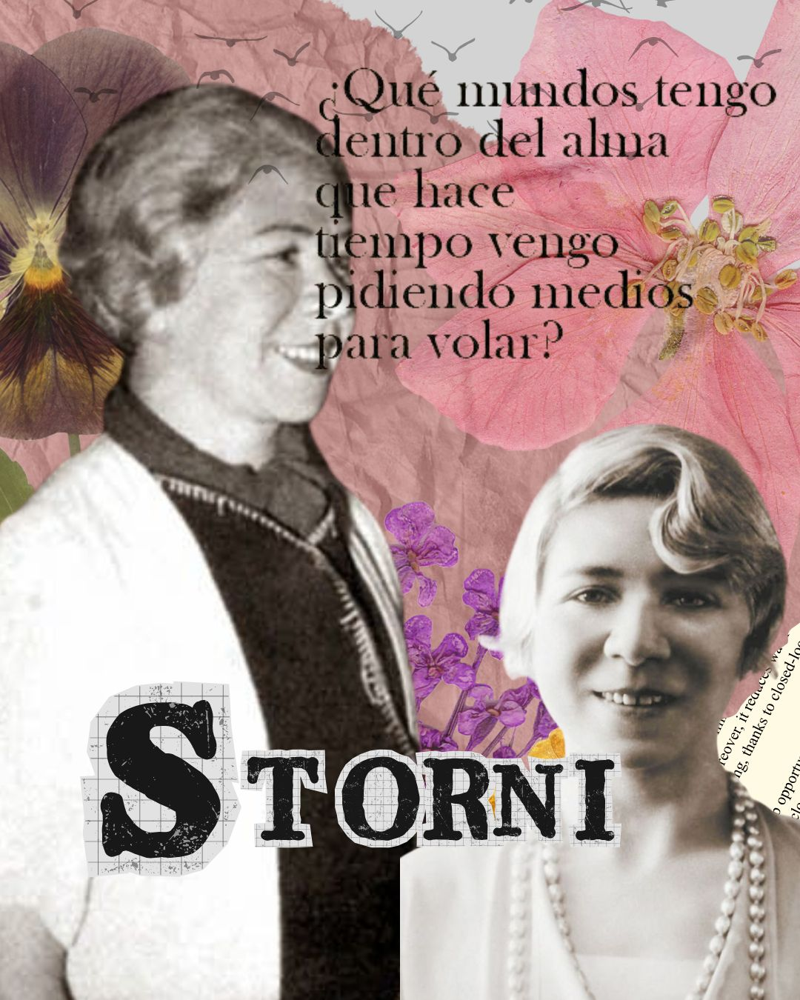

Tres poetas legendarias latinoamericanas que dejaron su huella marcada por generaciones mediante sus obras.
La poesía es un puente a las emociones y pensamientos que a veces se guardan bajo siete llaves. En Latinoamérica podemos decir con orgullo que tenemos poetas increíbles que logran tocar fibras de nuestros corazones y sentimientos. Te venimos a recomendar 3 poetisas para que lleguen a tu ser y tengas un momento, incluso, de reflexión.

Flora o mejor conocida como Alejandra Pizarnik nació en abril de 1936 en la provincia de Buenos Aires. Mediante poesías nos dejó entrever su propia vida y sus sentimientos, crisis depresivas y de ansiedad que se transformarían en letras y versos que transcenderían generaciones. Nos deja recordarla por sus palabras y no por su trágica muerte. Si queres conocer más te recomendamos sus obras: “La tierra más ajena” y “Poesía completa”. Te invitamos a leer más de ella en nuestra primera edición.

Idea Vilariño Romani nació un frío 18 de agosto de 1920 en Montevideo, Uruguay. Sus poemas nos impactan desde el amor y como este afecta de diversas maneras, ya sea desde el sentimiento de pertenecer y principalmente el de la ausencia y abandono. Sus relatos se volvieron iconos y más aun los que fueron relatados con su voz, siendo un fenómeno en internet. Si queres leer sus obras te recomendamos: “Poemas de amor” y “Pobre mundo”.

Alfonsina Storni nació el 22 de mayo de 1892 en la mítica ciudad de Mar del Plata, Buenos Aires. Por medio de sus poemas expreso diversos temas siendo el principal el amor y su contra cara el desamor, la libertad y como dicha libertad se veía afectada en las mujeres de su época. A día de hoy es una de las poetisas más recordadas a nivel internacional pero sobre todo en nuestro país. Desde Moka te recomendamos sus obras: “Mascarilla y trébol” y “Mundo de siete pozos”.
La poesía tiene la capacidad de conmovernos y tocar las fibras de nuestro ser. En moka nos fanatiza este género y nos parece importante brindarle un espacio de dedicatoria y más aun a autoras mujeres de nuestra región, es importante seguir sus legados.